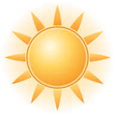

The mark
A lark climbing, drawn chunky and round rather than spiky. The badge carries the identity where detail cannot survive: at 16 pixels the disc still reads as a token, which is the one thing the Muninn raven could not do.
Palette
Warm paper surfaces with deep sky-teal and sun-amber. Every text token clears 4.5:1 on all
three grounds, so tokens.test.ts passes unchanged apart from its
color-scheme assertion.
Biomes
A brighter, higher-chroma daylight ramp.
Unverified against the game. These keys are Valheim's biome enum, kept so the schema
and tests still line up. Palworld's real terrain names have to come out of that game's own
data, the way scripts/comfort-recipes.py reads Valheim's. I do not have it
installed, and repository rule 4 says facts about the game never come from memory.
Type
Day 193, everything that happened
Bjorn joined as Bjorn on Steam. 2 of 10 online. Server up for 11 d 10 h.
nothing on the perch.
The world clock
Muninn's bronze shield becomes a capture-sphere rim: eight armour plates, a teal inlay, and
the lark on the crest where the winged skull used to sit. Modelled and lit in Blender
rather than drawn, so the bevels and rivets carry real reflections. The whole plate is
built from the radii SunDial.svelte depends on, and the face stays calm
because that component draws ticks, numerals and the readout on top of it.

| Face, clean for the overlay | r < 353 |
| Sun and moon orbit | r = 339 |
| Crest, clears the noon marker | r 408–503 |
| Clipped by | circle(49.7%) |


The markers that ride the rim.
The field
The backdrop. Weighted to the left and right edges, because
.scenery-veil covers everything between 17% and 83%.

Nothing on the perch
The error page, where Muninn had a moat.

nothing on the perch.
Replaces “past the moat there is only water”. The 8-bit Digging Moat loop has no counterpart here; that one needs writing, not drawing.
What changes when this lands
| File | Change |
|---|---|
web/src/app.css | Swap the :root block and the @theme inline mirror for tokens.css. The component layer below it needs a light-theme pass: .card, .glass, .backdrop filters, .map-shroud, .sun-dial-well and the gold gradients in .wordmark em. |
tokens.test.ts | One line: color-scheme: dark becomes light. Every contrast assertion already passes. |
Emblem.svelte | Body of mark.svg; add the badge variant for the map shroud. |
scenery-shaders.ts | Drop-in. Same four exports, same uniforms, same two passes, so scenery.ts is untouched. |
SunDial.svelte | Art paths only. The .sun-dial-well radial must invert for a light face. |
dial-art.test.ts | Byte budgets all hold with room: 1024 AVIF is 34 KB against 100 KB. |
og.jpg, banner | Not built yet. Needs the painted backdrop first. |
| The backdrop | The one piece not at Muninn's level. Shipping art is the vector scene; a Blender blockout exists in blender/field.py but needs real foliage, rock and cloud assets before it beats the vector version. |